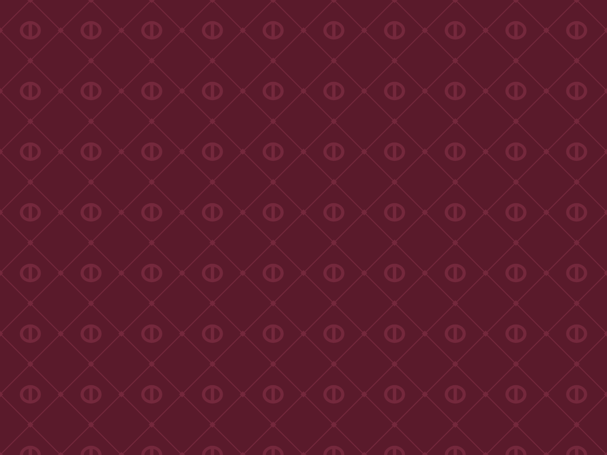
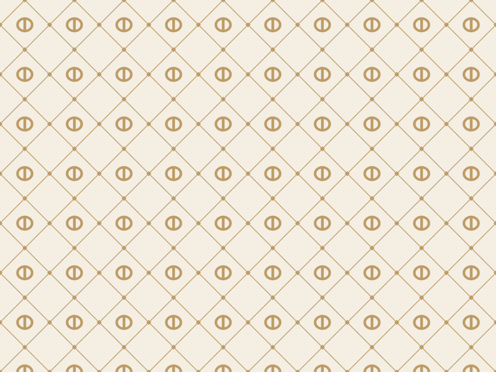

حزمة التطوير ١الاتجاه ج · نقش الشَّرعةIRTH · BRAND BOOK
الاتجاه ج · نقش الشَّرعة
لكل بيت فخامة نقشٌ يُعرف به قبل أن يُقرأ اسمه. نقش إرث شبكةٌ مائلة كأعواد الشَّرعة، وفي كل خانة واو المسند بشكل حبّة الزبيب، وعند كل تقاطع معيّن.



١عنابي على عنابي لجلد العلب: يظهر عند الميل في الضوء، ولا يزاحم الختم.
٢رازقي على العنابي العميق لبطانة العلب والأشرطة.
٣رازقي على العاجي لورق التغليف والمناديل.
٤الختم وحده على الوجه، داخل لوح سادة، والنقش حوله لا تحته.
إعداد وتصميم: م/ أحمد درهم حسين الفقيه — الشريك المؤسس ومدير المشروعU9